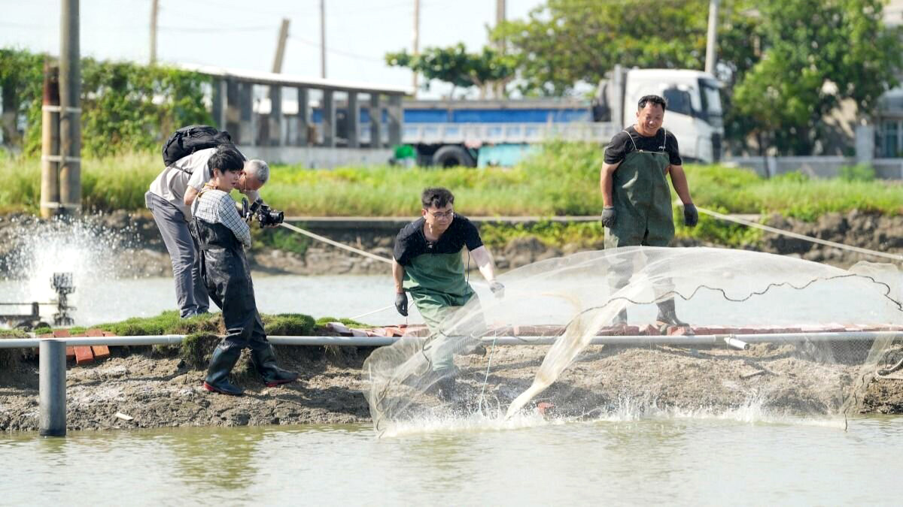
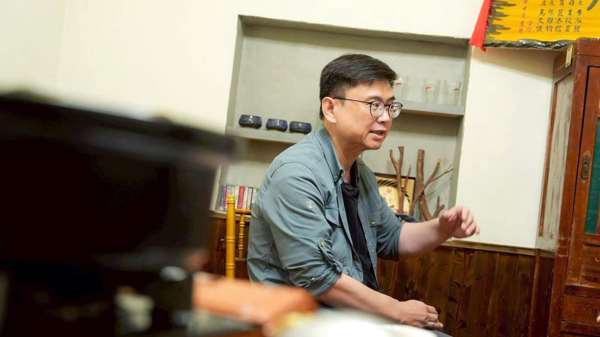
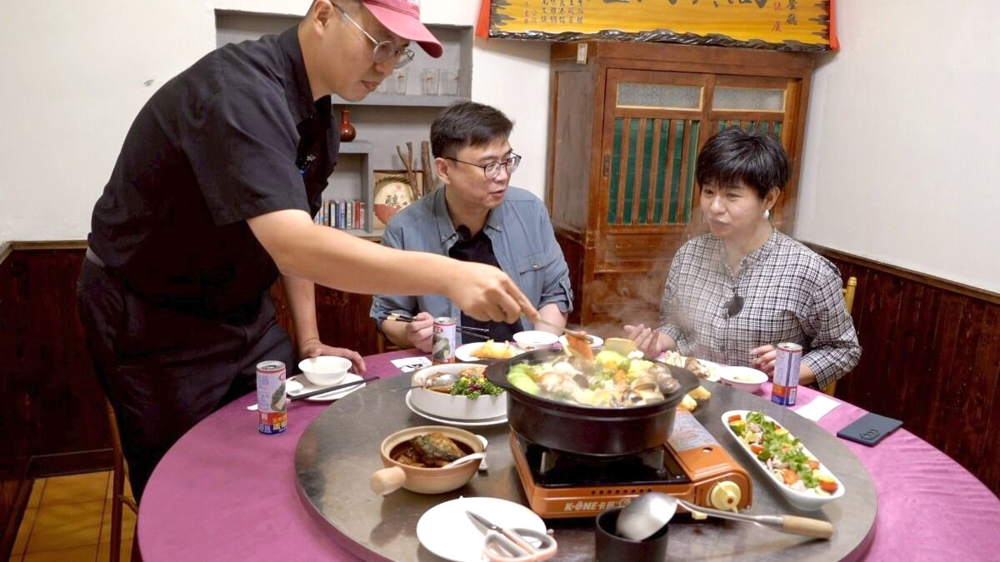

他的城市考題
賴瑞隆
一路把每一棒跑好的人，能不能跑出自己的路線？
◎ 報導／呂佳頴
◎ 攝影／柯勝雄
他的城市考題
◎ 報導／呂佳頴
◎ 攝影／柯勝雄
2025年7月
海線魚塭、港馨合苑餐廳＠高雄彌陀
帶一個不會游泳的人去抓魚，你會跟對方說什麼？「放心，我們都有做好防護。」這是最安全、也最不會出錯的答案。結果我聽到的是：「有問題～石斑魚會救你。」我忍不住回他一句：「你最好是。」和我對話的人，是賴瑞隆。一個看起來乖乖地、很像模範生、現在想接下高雄第四棒的人。
那天，賴瑞隆帶我到高雄彌陀——昔日被稱為虱目魚、石斑魚的故鄉。然而這幾年，大家說到高雄，常想到演唱會經濟、台積電、高科技產業⋯⋯但高雄還有另一面，在漁港邊、在魚塭旁、在大太陽底下。
賴瑞隆帶我下魚塭、撒網、抓魚；明面上是體驗漁民辛苦，但他真正想說的是：高雄的海線該被重新看見了。為此，他自己先被魚塭「考」了一次。

▲ 賴瑞隆撒出的網，成了一個「完美」的圓。但成功背後是先在鏡頭前失敗過兩次，他說：「漁民很辛苦的。」（圖／柯勝雄攝）
模範生擅長答題，什麼都要做到最好，但那天的題目偏偏不是紙上作答。賴瑞隆蹲在地上，一折一折整理漁網，接著把網揹上肩，那架勢十足，看起來還真不像第一次。
我問他：「你真的會喔？」他說：「有，教練有教我。」這像學生乖乖交代：「我有上課。」也像一個要選高雄市長的人在魚塭現場被臨時抽考，自己說懂漁民？那先撒一網看看。
「咻～～」漁網撒了出去。「有成功嗎？」我問。「沒有，網沒有開。」賴瑞隆坦然回答。我心裡想：魚不會因為你要選市長，就配合讓你抓。賴瑞隆臉上沒有異狀，把濕答答的漁網拉回來，重新整理，再撒一次。
這次網開了，但拉起網，裡面空空如也。賴瑞隆還是沒有不悅，又蹲下來收網，準備第三次。這一次，他換了個地方。
「欸，有感覺喔。」「感覺變重了。」「換地點的欺敵戰術成功。」賴瑞隆的聲音聽得出興奮。魚真的上來了。龍虎斑、還有鱸魚，在網裡跳著。他汗一直流，臉上的笑卻更亮。那一刻，突然明白他為什麼要帶我來抓魚。
「漁民的辛苦」光用講的很難完整表達。角度、力道、手勢、時間差，每一步都是技術。很多人都說自己懂地方，但願意到現場，被現場考一次，甚至可能被考倒的人，不多，賴瑞隆這位模範生做事一板一眼，那天看到的則是他願意下水，也願意重來。

▲ 賴瑞隆灑網三次，搭配換地點欺敵，終於抓到魚。 （圖/取自賴瑞隆FB）
彌陀這邊的養殖漁業，曾經黯淡過。過去石斑魚銷往中國，卻突然被說藥檢沒過，訂單全被禁。「是政治因素，還是真的藥檢沒過？」賴瑞隆笑了笑，說沒關係啦，重點是大家從危機裡學會一件事：「不要把雞蛋放在同一個籃子裡。」
於是，彌陀開始改變。從導入AI改變飼養方式，著手研發新產品。其中，「切片的」銷往歐美，因為歐美市場不一定吃整條魚。「魚塊」銷往日本，因為日本人和台灣人一樣，會煮湯、會吃魚，甚至連魚皮都被拿來提煉膠原蛋白，做成面膜。
「銷往歐美日，一切按照科學和標準。」他說。標準不會初一十五不一樣，不用看人臉色，也不會被養套殺。原來，魚不只是換市場，也是換命運。從養殖、行銷，到找通路，年輕人慢慢回來了。小漁村也開始活得更有底氣。
「要做地方創生。」賴瑞隆把剛剛撈起來的石斑魚片，放進火鍋裡時這樣說。魚不久前還在魚塭裡活蹦亂跳，現在已經在鍋裡煮熟。桌上也全是在地食材。虱目魚滷肉、蒲燒虱目魚、白蝦三明治，還有一道名字很可愛的涼菜——「豬事」順利。
這一桌不是單純的菜單，是小漁村把自己重新端上桌的方式。坐在他旁邊的，是回鄉開餐廳的年輕老闆吳懿恆，他的店（港馨合苑餐廳）開在彌陀小漁村的巷弄裡。我問：「這樣會有人來嗎？」他回答：「有喔。」年輕人回來養魚，回來開餐廳，也回來做文創小店，小漁村的確熱鬧了起來，但賴瑞隆說，這還不夠。

▲ 賴瑞隆說，魚塊銷往日本、魚片銷往歐美，要分散市場，把雞蛋放不同籃子裡。（圖／柯勝雄攝）
彌陀旁邊，就是路竹、橋頭、楠梓科學園區。不是每個人都喜歡住在公司旁邊，對很多人來說，開車半小時多一點到公司，下班後又能回到比較安靜的地方，反而剛好。賴瑞隆說。「台61線，西濱快速道路要延伸到高雄了。」他想像的是，未來交通更方便之後，上班可以往科技廊帶走，下班可以回到海線。路上有風，有海景，也有和市中心不一樣的生活節奏。
「所以，彌陀即將迎來工程師？」我問。他笑著點頭說，彌陀不只是高雄人的後花園，不只是周末帶全家來吃新鮮魚貨的小漁村，也可能成為科技業工作者新的生活選項，他想像的不是把彌陀變成另一個市中心。而是讓海線和科技廊帶之間，有一種新的生活距離。
城市的擘劃，交通是網絡，也是治理。高雄的科技業、演唱會經濟等已經被看見。但農漁業、海線生活，不能只是城市邊緣的風景。「卅八區各有特色，都要做起來。」這時候的賴瑞隆，又恢復了模範生的樣子。「不累嗎？」他說，自己的口才或許不是特別好，但絕對認真做。

▲ 一桌高雄海線料理，看見養殖升級與地方創生，一旦交通、科技廊帶接上後，魚塭旁將吸引工程師進駐。（圖／柯勝雄攝）
從謝長廷、陳菊到陳其邁，高雄綠營執政有一條長長的路。賴瑞隆想接下去，等於是在爭取成為第四棒。但這一棒，不會只是喊接棒，就有人交給你。他被說記憶點不足，有點像路人甲。也有人拿近期流行的韓劇《鐵拳教育》調侃他，暗諷過往小孩的爭議事件。
「還好啦！」他說，既然是公眾人物，就要承受這些攻擊。成熟的政治人物不能怕人罵。如果每天只在乎別人的指指點點，而不聚焦高雄的未來和發展，那恐怕忙不完。這樣的回答，很模範生，也很賴瑞隆。不張揚、不反擊，也不把話說滿。
那天從魚塭走到餐桌，再從一條石斑魚談到一座城市的下一步，看到的不是一個很會製造金句的人。而是一個用自己的速度把地方一格一格補起來的人。這是賴瑞隆的優勢：穩、認真、一步一步，不急著把自己演成很有戲。
但如果高雄要交給他，這也是他的考題。因為第四棒不是只要穩穩接住，還要跑出自己的速度，跑出自己的方向，也跑出一座城市下一階段的想像。
魚不會因為你要選市長，就配合讓你抓；城市也不會因為你說準備好了，就自動把答案交出來。他能不能接下高雄的第四棒，還在爭取認同的路上。但那天，魚塭先給了他一個答案：網沒有一次就開，魚也不是一開始就上來。
重要的是，他知道怎麼調整位置，讓下一網有了重量。「一路把每一棒跑好的人，能不能跑出自己的路線？」這是賴瑞隆的考題。

習慣把答案整理清楚的人，能面對沒有標準答案的台北嗎？

看見缺口的人，能從台北的各種「可是」裡找到方向嗎？

會維修城市的人，能想像「城市」嗎？

跑遍新北的人，能不能把腳印走成方向？

擅長管理複雜系統的人，能讓快速長大的桃園產生共同方向嗎？

熟悉制度的法律人，能找回「消失的4分鐘」嗎？

看懂產業布局的人，能不能看見每一種人的生活？

地方跑得久的人，能不能跑出城市方向？

給答案可以很快，城市治理什麼都能馬上辦嗎？

從競爭中突圍的人，能不能讓不同地方、派系與世代重新走在一起？

直率的真實，能轉換成市民的治理信任嗎？
新聞部
副總經理 王結玲
議題研究中心／呂佳頴
採訪中心攝影組／柯勝雄
網路新聞中心／楊致中・談雍雍・吳家瑜
數位事業部
內容策展組／廖玉貞・彭嘉儀・林佳瑤・李佳綺
© TVBS Media Inc. All Rights Reserved.｜聯利媒體股份有限公司